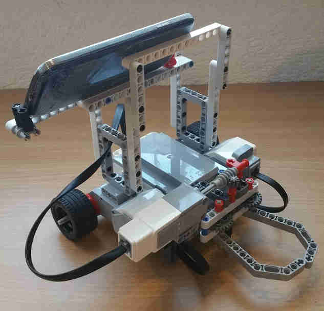
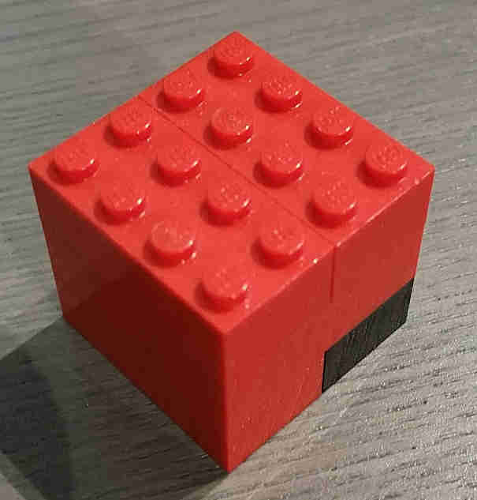

Roboter
Der Roboter ist ein Lego EV3 Stein. Er wird jedoch nicht vom vorinstallierten Betriebssystem sondern mit ev3dev betrieben. Dies ermöglicht die Steuerung über das Internet. Weiter wurde der Roboter mit einer Kamera in Form eines Samsung S4 ausgerüstet. Dieses streamt mithilfe der App IP Webcam eine Liveübertragung der Kamera. Bei jeder Bewegung vorwärts oder rückwärts, ist der Roboter eine halbe Sekunde in Bewegung. Dabei legt er einen Weg von .... Somit erreicht der Roboter eine Maximalgeschwindigkeit von ...
Aufgabe
Die Aufgabe des Roboters besteht darin, die am Boden verteilten Legoklötze in einen Zielbereich zu bringen. Dazu nutzt der Roboter seinen Greifarm. Er kann mit diesem die Klötze umarmen, um sie danach auf ebenem Grund frei bewegen zu können. Es können jeweils bis zu zwei Klötze gleichzeitig bewegt werden. Die ganze Aufgabe ist angelehnt an ferngesteuerte Roboter, die in der echten Welt eingesetzt werden können. Einige Beispiele dafür wären Bombenentschärfer und Räumungsroboter nach Katastrophen. Solche Roboter operieren oft auch mit einer Livekamera und einer Fernsteuerung. Die Fernsteuerung kann je nach Roboter jedoch sehr komplex ausfallen.
Programm
Zur Steuerung wurde eine vielzahl von Programmiersprachen verwendet. Zuerst wird dem Nutzer die Website in Form von HTML übertragen. Die Gestaltung wird von CSS übernommen, das dem Browser genau angibt, wie er das HTML darzustellen hat. Das design folgt hierbei den Material-Richtlinien von Google. Ausserdem wurde es sowohl für PCs als auch für Mobilgeräte optimiert.
Für die Steuerung selbst wird im ersten Schritt Javascript verwendet. Mithilfe einer Erweiterung (Fachsprache: Library) namens Jquery schikt der Browser eine Anfrage für ein PHP-Script an den Server. Dies ist der letzte Schritt der im Browser selbst stattfindet.
Weiter geht es auf dem Server selbst. Das PHP-Script dient als Brücke und öffnet ein Bash-Script auf dem Raspberrypi. Dieses Bash-Script verbindet sich mit dem EV3 Roboter und befiehlt ihm sich zu bewegen.